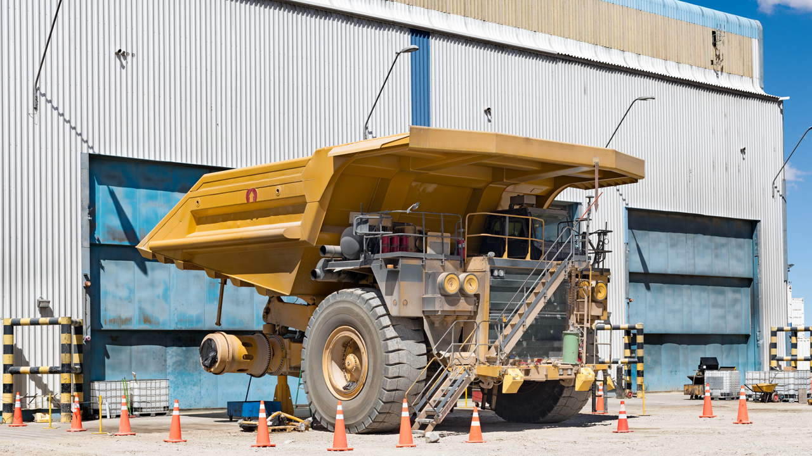

Home / Blog / OTR vs. Truck & Bus Retreading
EQUIPMENT & PROCESS GUIDEOff-the-road retreading isn't a scaled-up version of a truck & bus line. Casing size, curing equipment, cycle times, cost math, and inspection all change — here's exactly how.
Published September 8, 2026 · Good Hope Retreaders

Every article we've written about retreading up to now — pre-cure vs. mold-cure, curing chambers, casing inspection — describes the world of commercial truck and bus tires. Off-the-road (OTR) retreading, the kind that keeps mining haul trucks, wheel loaders, and earthmovers rolling, runs on the same underlying chemistry — bonding new tread to a sound casing under heat and pressure — but almost everything around that core process is different. The casings are bigger and heavier by an order of magnitude, the curing equipment and cycle times don't resemble a shop-scale line, the cost math changes because the tires themselves are so expensive, and even the safety playbook shifts. This is a look at exactly what changes and why, for anyone comparing the two disciplines.
A commercial truck tire casing is something one technician can lift, roll, and load into a chamber by hand. A giant OTR casing is not. Tire Business profiled an OTR retreader whose casings routinely reach outside diameters approaching 10 feet and weigh several tons apiece — sizes and weights that put crane or specialized tire-handler equipment between the casing and every step of the process, from unloading to buffing to curing. Gradeall's OTR tire guide puts a number on the top end: some giant mining tires stand up to 13 feet tall and weigh more than 5 metric tons, and loading or unloading one is treated as a formal lifting operation, not a two-person tire change.
Construction differs too. OTR casings come in both bias-ply and radial builds, and Magna Tyres' construction guide notes that bias OTR tires carry a large number of reinforcing plies to survive severe loads and impacts, while radial OTR casings use steel-cord belts running bead to bead for better shock absorption on uneven ground. The Tire Industry Association treats the two as genuinely separate disciplines: it publishes distinct recommended-practice bulletins for retreading radial-ply OTR tires and retreading bias-ply OTR tires, on top of its separate commercial truck & bus guidance — there's no single "how to retread" standard that covers both worlds.
A commercial shop's precure retreading line — the kind we supply — cures a built tire in a chamber sized for truck and bus casings, and the cycle is measured in hours, not a full workday. TRIB's own process description puts a typical precure cure at around three and a half hours to bond the cushion gum layer; a traditional mold-cure job run with a rim and tube, by contrast, isn't unusual to run a full eight-hour cycle, because the rim and tube act as a thermal barrier that slows heat transfer into the casing.
OTR curing operates on a different scale entirely. Mold-cure is the dominant process for large OTR radials, per Mordor Intelligence's tire retreading market analysis, which specifically flags mold-cure as the standard for the 35-to-63-inch radial tires used in mining, quarrying, and heavy construction — the opposite of commercial truck & bus retreading, where precure dominates. And per Tire Business's reporting on Walters Tire, most large OTR radials don't fill a circle mold evenly anyway, so after fresh rubber is applied the tread pattern is hand-sculpted onto the tire with a tool called a "groover" — a step with no equivalent in a precure truck & bus line, where the tread pattern is already molded into the strip before it ever touches the casing. Where a matching mold isn't available at all, some OTR retreaders cure in an autoclave instead — Marangoni's autoclave-OTR line, built for tires up to 63 inches, exists specifically to vulcanize any size or tread pattern a customer needs without a dedicated mold.
The net effect: a truck & bus retread moves through a chamber in a handful of hours on equipment that fits an independent shop's floor. A giant OTR retread moves through mold or autoclave equipment built and crane-operated at an entirely different scale, and the cure itself runs far longer — this is capital-intensive, specialist equipment, not a bigger version of a commercial curing chamber.
The purchase-price gap that drives commercial retreading — a retread typically running 30-50% of a comparable new tire's price, per Bandag/Bridgestone's cost data — holds directionally for OTR too. STTC's write-up on off-road tire retreading cites savings in the 20-50% range, and Kal Tire's mining tire group states that its retreads cut tire operating costs by 60% or more in many applications. What changes for OTR isn't the percentage logic — it's the base the percentage applies to. A giant mining tire is a multi-thousand-dollar asset before you even factor in the haul truck's downtime while it's off the wheel. We won't put a precise dollar figure on the per-tire savings here, because that number swings enormously by tire size and site — but the gap between a new giant OTR tire and its retread is large enough that OTR retreading has been standard fleet practice in mining and quarrying for decades, and it's exactly why Kal Tire's mining retreads are marketed on the additional 3,000 to 6,000 hours of service life a good OTR retread can add, not just a percentage-off number.
Casing selection matters more here too, not less. Because a bad casing is a much larger loss to write off, mines lean harder on rigorous, size-appropriate inspection before committing a casing to a retread cycle — which brings us to the biggest process difference of all.
Our 5-point casing inspection guide covers how commercial casings get checked with tabletop-scale nail-hole detectors and shearography units built for truck and bus tire dimensions. OTR casings need purpose-built versions of that same equipment at a much larger scale. The Steinbichler Intact 4300 shearography system, covered by Tyrepress, is built specifically to inspect giant OTR tires with an internal diameter between 45 and 63 inches and a weight up to 7,500 kg — dimensions no commercial-scale inspection line is designed to handle. It loads with a standard forklift and mounts the tire vertically so both sidewalls can be scanned without flipping it, running a roughly 20-minute test cycle; the article notes it's used by retreaders specifically to check casings both before and after the retread process.
Safety scales up right alongside the equipment. Zipper ruptures are a known hazard on truck tires, as we covered in our casing inspection guide — but the same failure mode on a giant OTR casing releases far more stored energy. A hazard alert on large-vehicle and off-road tire inflation, drawing on NIOSH's Fatality Assessment and Control Evaluation program data and republished by Washington State L&I, warns that tire explosions during servicing can generate pressures over 1,000 psi and throw debris and rim components as far as 350 feet — hazards the alert says are greatly increased on the multi-piece rims and higher inflation pressures common to large vehicle and off-road equipment. Modern Tire Dealer's rundown of OTR service hazards treats these as a distinct category of risk from standard truck tire service, driven directly by the sheer size and weight of the tires, rims, and handling equipment involved. It's part of why the Tire Industry Association runs a dedicated Basic Earthmover Tire Service certification track, separate from its commercial truck & bus tire service training — the skills genuinely don't transfer one-to-one.
All of this adds up to a narrower field of players than commercial retreading. Truck & bus retreading is done by thousands of independent shops across North America. Giant-size OTR retreading is a different story — Tire Business quoted one longtime OTR retreader estimating there are only about 14 to 16 viable companies in the entire U.S. doing giant-size tire retreading, a reflection of just how much specialized, capital-intensive equipment the work demands. The market data backs up that this is a growing, not shrinking, niche: Mordor Intelligence charts the off-the-road and mining tire segment of the retreading market at roughly a 5.96% compound annual growth rate, tied to mineral extraction activity in regions like Africa and South America where specialized OTR casings cost multiples of their on-road equivalents.
| Factor | Truck & bus | OTR / mining |
|---|---|---|
| Casing size | Manual handling | Up to ~10 ft dia., several tons — crane/handler required |
| Dominant process | Precure | Mold-cure (autoclave where no mold fits) |
| Typical cure cycle | ~3.5-8 hours | Substantially longer — large press/autoclave cycles |
| Tread application | Pre-molded strip | Often hand-sculpted with a "groover" post-cure |
| Casing inspection scale | Shop-scale nail-hole/shearography units | Giant-format shearography, up to 63" dia. / 7,500 kg |
| Who does it | Thousands of independent shops | A small, specialized field (~14-16 U.S. companies) |
We supply precure retreading machinery, components, and consumables built for commercial truck & bus and light-to-mid-size off-road work — including 750W-class extruder guns for heavier repair work and inspection spreaders for full bead-to-bead casing checks. Giant-format mining OTR curing presses and autoclaves are a different, more specialized category of capital equipment than what a truck & bus line runs. If your shop handles commercial and mid-size off-road casings, tell us your tire sizes and volume and we'll spec the right line — with transparent all-in Canadian pricing and delivery from our Ontario warehouse.
Get an equipment quote →Send us your requirements and we'll get back to you within 24 hours with pricing and lead times — no obligation.